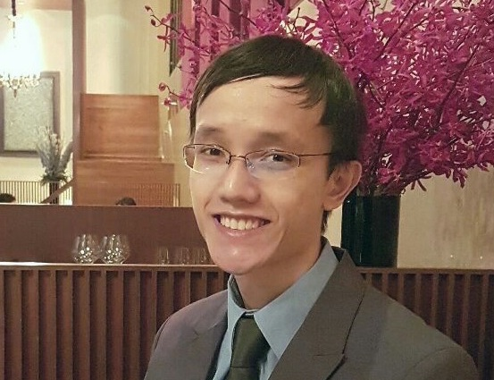
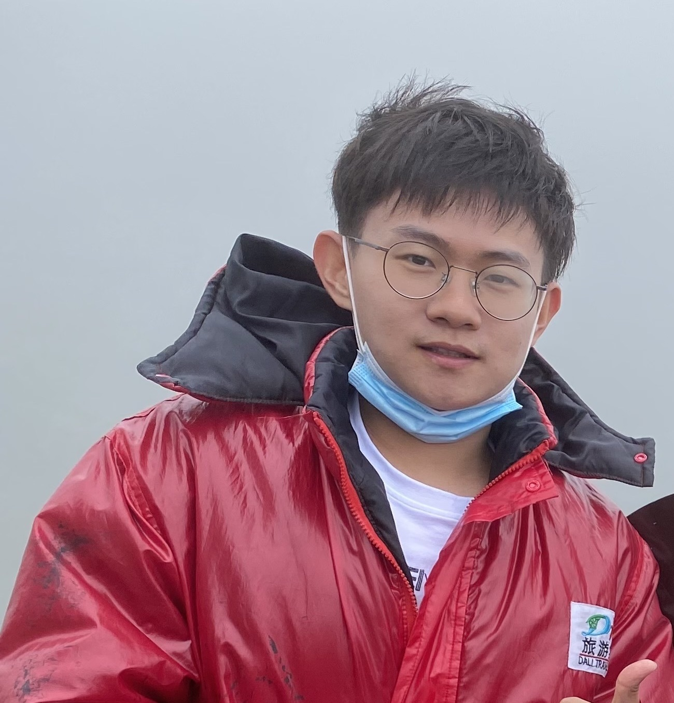
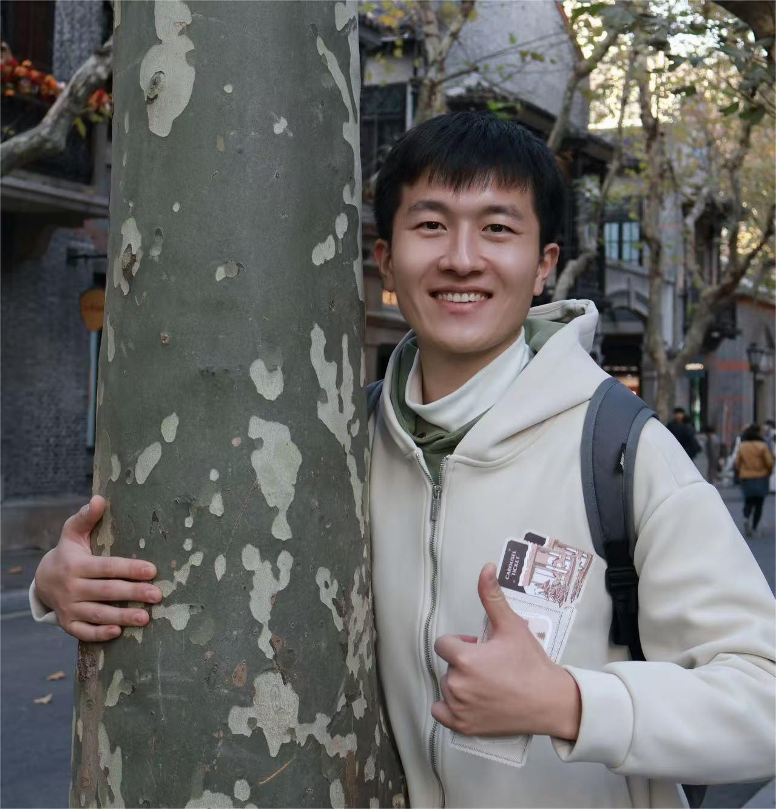

Ph.D. / Master Students
Yao Feng Chong

I'm a neurologist at National University Hospital who subspecialises in behavioural neurology. I am interested in cognitive and theoretical neuroscience, and the application of models to explain cognitive deterioration in dementia.
In my free time, I read eclectically.
Zijian Dong

I graduated with a B.Eng degree in Biomedical Engineering from Beihang University in 2020.
Currently, I am a ECE PhD student under Prof. Helen Zhou. I am interested in applying machine learning techniques to investigate the secrets of the human brain.
I enjoy petting my cat, traveling, biking and swimming.
Zhizhou Li

I graduated with a Master's degree from Fudan University in Circuits and Systems in 2023.
Currently, I am pursuing a PhD at Yong Loo Lin School of Medicine under Prof. Helen Zhou, with a research focus on brain decoding. My work involves leveraging Machine Learning to decode and interpret brain activity.
Outside of research, I have a crazy passion for soccer and basketball, and I enjoy exploring new ideas, cultures, and technologies.